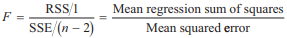

CORRELATION ANALYSIS
--------------------
Testing the Significance of the Correlation Coefficient
- t-test小于查表t时不能拒绝假设
- n越大t越大, t越大越可能拒绝假设
--------------------
LINEAR REGRESSION
--------------------
The Coefficient of Determination For The Regression
- Coefficient of Determination
R2代表系统风险(方差)的比例, 其余部分是非系统风险(方差)
COD = R2
- 单个独立变量的线性回归中, Correlation Coefficient = Coefficient of Determination 的平方根 = Multiple R
- 线性回归的sample error of estimate = [unexplained variation/(n-2)]的平方根
- 线性回归的sample standard deviation of dependent variable = [total variation/(n-1)]的平方根
--------------------
Hypothesis Testing
对线性回归 Yi=α+βXi+ε, 有下面几种测试
- 区间测试
其中代表β的估计值, coefficient of β,
代表查表t,
计算结果代表假设参数的置信区间, 如果β的原假设值在区间之外则拒绝原假设
- t测试
其中β代表β的原假设值,
将得到的结果与查表t值比较, 如果结果t值比查表t值大则拒绝原假设
--------------------
Analysis of Variance in a Regression with One Independent Variable
-
SSE = Sum of squared errors or residuals, or residual sum of squares
RSS = regression sum of squares
TSS = SSE + RSS = Total variation
-

其中 F1,n-2 = F(# slope parameters), (n - # parameters)
考虑直线时只有一个斜率参数, # slope parameters = 1
自由度 n - # parameters = n - 估计的参数的个数(2个, 截距和斜率) = n - 2
当只有一个变量时, F统计 = t统计值的平方
查表得到p值, 通过p值判断是否拒绝原假设, p值越小越可能拒绝原假设
- 独立变量个数 = Regression自由度 (决定斜率的参数个数)
--------------------
Prediction Intervals
-
其中 s = standard error of estimate
n = 观察数
X = 独立变量
X = estimated mean
sx2 = 独立变量的variance
- 预测区间的步骤
- Make the prediction
- 用上面的公式计算预测误差的方差
- 选择显著性水平α, 以及回归的自由度, 查表得到critical value tc
- 计算(1-α)预测区间
--------------------
Limitations of Regression Analysis
- parameter instability, 相关性本身就会改变, 导致回归关系改变
- Public会利用回归结果参与市场活动导致回归关系的变化
- 回归的线性假设可能会不成立, 导致线性回归的假设测试和预测无效
--------------------
Next Chaptor